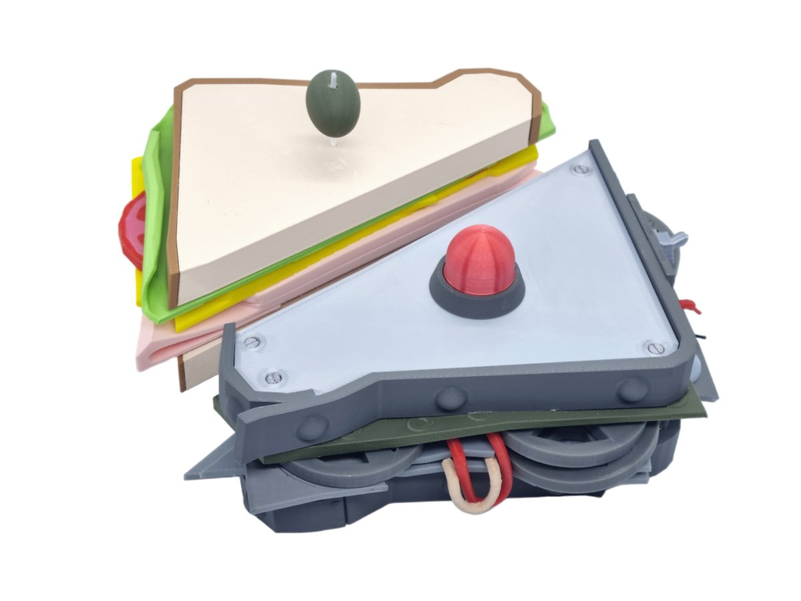

Robot Sandwich

Description
Imma keep it a buck fifty with you. I'm lazy. Luckily for me, we live just in the right time to abuse AI for silly tasks, before it yet realises it wants to destroy us. But up until then - I'll let my boy Mr.GPT handle this recipe for you folks. Here's AI's favourite way to do a sandwich.
Ingredients
- Two slices of sourdough bread - for a nice texture and flavor.
- Turkey slices - 3-4, or as you like it.
- Cheddar cheese - 1 slice, because it melts beautifully.
- Tomato slices - a few thin slices.
- Lettuce - one or two leaves for crunch.
- Mayonnaise - just a thin layer for creaminess.
- Dijon mustard - a dab for a kick.
Steps
- Spread a thin layer of mayonnaise on one slice of bread and Dijon mustard on the other.
- Layer the turkey, cheese, tomato, and lettuce on one slice.
- Top with the second slice of bread.
- (Optional) Grill it for a few minutes to melt the cheese, or enjoy as is!